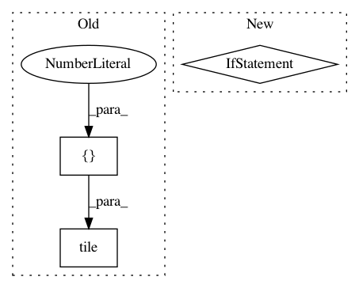

1a7fa6010b7234bb9efddf761c9bf52af07dc347,texar/modules/embedders/position_embedders.py,PositionEmbedder,_build,#PositionEmbedder#Any#Any#Any#,105
Before Change
"Either `positions` or `sequence_length` is required.")
max_length = tf.reduce_max(sequence_length)
single_inputs = tf.range(start=0, limit=max_length, dtype=tf.int32)
inputs = tf.tile(tf.expand_dims(single_inputs, 0),
[get_batch_size(sequence_length), 1])
embedding = self._embedding
dropout_layer = self._get_dropout_layer(self._hparams, inputs)
if dropout_layer:
After Change
inputs = expander * tf.expand_dims(single_inputs, 0)
st = self._hparams.dropout_strategy
if positions is None and st == "item":
// If `inputs` is based on `sequence_length`, then dropout
// strategies "item" and "item_type" have the same effect, we
// use "item_type" to avoid unknown noise_shape in the "item"
// strategy
st = "item_type"
dropout_layer = self._get_dropout_layer(self._hparams, inputs, st)
embedding = self._embedding
if dropout_layer:
In pattern: SUPERPATTERN
Frequency: 4
Non-data size: 3
Instances
Project Name: asyml/texar
Commit Name: 1a7fa6010b7234bb9efddf761c9bf52af07dc347
Time: 2018-07-12
Author: zhitinghu@gmail.com
File Name: texar/modules/embedders/position_embedders.py
Class Name: PositionEmbedder
Method Name: _build
Project Name: NifTK/NiftyNet
Commit Name: 6b48055fdfe3c628833ed26ca394ef2fb1d97f82
Time: 2017-10-26
Author: wenqi.li@ucl.ac.uk
File Name: niftynet/layer/resampler.py
Class Name: ResamplerLayer
Method Name: _resample_nearest
Project Name: shenweichen/DeepCTR
Commit Name: 5a9e9622a7309794cc0cf511080fc2bd6b73a20a
Time: 2019-11-06
Author: wcshen1994@163.com
File Name: deepctr/layers/sequence.py
Class Name: SequenceMultiplyLayer
Method Name: call
Project Name: GPflow/GPflow
Commit Name: 62972a279c51f80a890d813710f09d7d78065f6e
Time: 2016-07-07
Author: mv310@cam.ac.uk
File Name: GPflow/param.py
Class Name: Param
Method Name: get_samples_dict